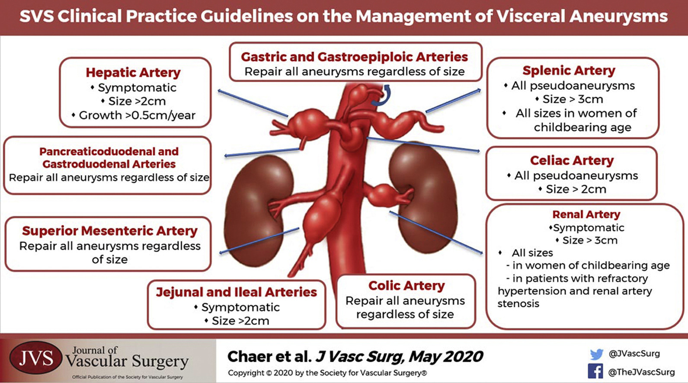

Rapid Review
Authors: Matthew Chia and Maggie Reilly
Venous Disease
Memorization CEAP classification:
C0: no visible or palpable signs of venous disease.
C1: telangiectasias or reticular veins.
C2: varicose veins.
C3: edema.
C4a: pigmentation and eczema.
C4b: lipodermatosclerosis and atrophie blanche.
C5: healed venous ulcer.
C6: active venous ulcer.
EHIT (DVT after EVLA), endothermal heat-induced thrombosis
Thrombus without propagation into the deep vein: no treatment
a. Peripheral to superficial epigastric vein
b. Central to superficial epigastric vein, up to and including the deep vein junction: can consider antiplatelets
Thrombus propagation into the adjacent deep vein but comprising <50% of the deep vein lumen: weekly surveillance
Thrombus propagation into the adjacent deep vein but comprising >50% of the deep vein lumen: therapeutic anticoagation until resolution to the SFJ
4. Occlusive deep vein thrombus contiguous with the treated superficial vein: treat like DVT
Reasons to treat superficial venous thrombosis (fondaparaneux x 45 days)
Within 3-5 cm of deep system (e.g., SFJ)
> 5cm long
Propagates with conservative management
For more see ?@sec-venous
Vascular Lab
TCD
TCD temporal window:
Toward probe is up on waveform (MCA, ICA)
Away from probe is down on waveform (ACA)
PCA is bidirectional (P1 before PCommA is up, P2 after PCommA is down)
TCD orbital window:
Ophthalmic is toward probe
ICA in siphon is bidirectional
TCD occipital window:
- vertebral and basilar away from probe (think direction on carotid duplex)
Consider shunt during CEA if MCA velocity drops by 50% or more A doubling of MCA mean velocity suggests cerebral hyperperfusion syndrome
Lindegaard ratio 3-6 indicates spasm, > 6 indicates severe spasm. PSV in MCA relative to extracranial ICA.
For more see ?@sec-intracranial
Basics
Power doppler is like amplitude, good for low flow evaluation but you lose directionality (think absolute values). Good for detecting string sign, low flow in renal parenchyma, or torsion. Not useful for directionality of flow (e.g., TCD or vertebral direction), and will not alias.
Depth resolution (synonymous with axial, longitudinal range) in PW mode is limited by half the spatial pulse length (SPL). As long as the resolution between objects is less than half the SPL, objects can be discriminated (because the total distance doubles going round). Shorter SPL means you can distinguish smaller things, which means better (smaller) resolution. Shorter SPL theoretically is achieved by shorter wavelength/higher frequency, more damping, shorter pulse duration. It is not technically affected by PRF/PRP.
PRP = time between pulses = imaging depth (ID) * 13 microseconds/cm note that PRF = 1/PRP, and that PRFs are generally 5-40 kHz
Maximum Doppler shift detectable = Nyquist limit = PRF/2. Remember this only applies to PW Doppler. CW Doppler has no practical limit beyond which aliasing occurs. Use caution between depth resolution (2x SPL) and Nyquist limit (1/2 PRF)
For more, see ?@sec-lab-overview
Sizes and Velocities
Intracranial aneurysm and carotid stenosis: no need to treat if < 10mm

[@chaer2020]
AAA screening
In any pt with suspected or confirmed AAA, physical exam of femoral + popliteal pulses
Any pt with femoral or popliteal aneurysm should undergo AAA screening
Men or women 65-75 years w/ h/o tobacco use (SVS recommendation)
AAA surveillance
2.5-3cm: 10 years
3-3.9cm: 3 years
4-4.9cm: 1 year
5-5.4cm: 6 months
Carotid velocities
> 70%
PSV > 230
EDV > 100
ICA/CCA > 4.0
> 50%
PSV > 125
EDV > 40
ICA /CCA > 2.0
CMI velocities
CA PSV > 200
SMA PSV > 275
Renal stenosis criteria
PSV > 200 (some advocate for PSV > 285)
RAR > 3.5, but aortic velocity should be 40-100 cm/s
Parenchymal disease is RI > 0.7
- (PSV-EDV)/PSV
Zebras
Indications for surgical management of vertebral disease
At least 60% stenosis
In both arteries if patent
In one artery if contra is hypoplastic, occluded, or terminates in PICA
If low flow: other etiologies have been ruled out (arrhythmia, emboli, inner ear dysfunction, electrolyte imbalance, intracranial tumor, hypotension)
Posterior embolism should be considered for treatment
Location
V1 can be treated by transposition onto CCA or vein bypass
- Proximal vertebral artery reconstruction is associate with Horner’s syndrome
V2 not usually accessible, if uncontrolled traumatic hemorrhage, ligate at V1+V3
V3 disease described treatments include by bypass, transposition of ECA or occipital artery, or transposition onto ICA
For more, see ?@sec-vertebrobasilar-disease
Surgical exposure of supra-aortic vessels
Median sternotomy for: innominate, proximal R SCA, R CCA, and L CCA
L trapdoor (L anterolateral thoracotomy and supraclavicular incision) for proximal L SCA
- Watch for L vagus n. and thoracic duct in chest, and watch for phrenic n. on anterior scalene
MALS: compression with EXPiration, normalization with INSPiration
Electrolyte abnormality with re-feeding
Phos down (ATP)
K, Mg down (taken intracellular for anabolism)
- Mg down can lead to Ca down
Torsades can be caused by low K, Mg, or Ca > treat with Mg
Popliteal artery disease
Baker’s cyst vs cystic adventitial disease (knee flexion)
Baker’s cyst is contiguous with joint space
Cystic adventitial disease is within the arterial wall
Popliteal entrapment (passive dorsiflexion or active plantar flexion)
Popliteal artery aneurysms
If patients present with PAA, need screening for AAA
Above 2 cm should undergo repair, unless high clinical risk may wait until 3 cm
Can also consider repair at smaller sizes if high embolic risk
If life expectancy > 5 years, should undergo open repair
If acutely thrombosed
I + IIa should undergo lysis if tibial outflow bad
IIb should undergo thrombectomy of some fashion
III undergo primary amputation
For more, see ?@sec-pop-disease
HITT
4 Ts
Platelets fall > 50% and are less than 20k
Clear onset between 5-10 days or > 1 day w/ previous heparin exposure
New thrombosis
No other cause for thrombocytopenia
Bivalirudin if hepatic failure
Argatroban for renal failure (OK for hepatic fail, but needs titration)
Obturator foramen
Valentine/Wind
Nerve and vessels traverse the foramen superolateral corner
Tunnel should be created “centrally” by incising the medial portion of fascia
Chaikof/Cambria
Nerve and vessels traverse posterolaterally
Tunnel should be created anteromedially
Rutherford
Nerve and vessels are posterolateral
Tunnel should be created anteromedially